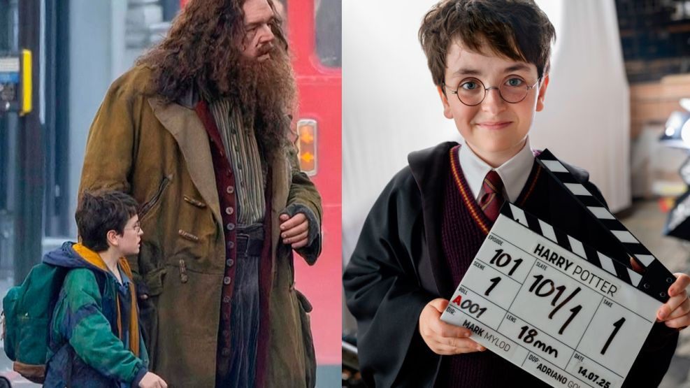

¡Bienvenido al mundo mágico de Harry Potter!
Aquí celebramos la magia, la amistad y las aventuras que han inspirado a millones de fans en todo el mundo. Desde Hogwarts hasta el Callejón Diagon, acompáñanos a revivir los momentos más icónicos de la saga escrita por J.K. Rowling.
“La felicidad se puede encontrar hasta en los más oscuros momentos, si somos capaces de usar bien la luz.”
Albus Dumbledore
Sobre el Mundo Mágico
Hogwarts School of Witchcraft and Wizardry
Una escuela mágica en Escocia donde jóvenes magos y brujas aprenden hechicería, pociones, defensa contra las artes oscuras y más.
Las cuatro casas fundadoras son:
Gryffindor: valor, osadía y determinación.
Slytherin: ambición, astucia y liderazgo.
Ravenclaw: inteligencia, creatividad y sabiduría.
Hufflepuff: lealtad, paciencia y justicia.
Informacion Importante
Oficial la nueva serie de Harry Potter ya esta siendo rodada y su estreno es en 2027.
Que sabemos hasta ahora?
Fecha de estreno: Se confirmó que la serie se lanzará en 2027 en la plataforma de streaming de HBO.
Primeras imágenes: En julio de 2025, HBO compartió la primera imagen del actor principal, Dominic McLaughlin, caracterizado como Harry Potter, vestido con su uniforme de Gryffindor. También se ha revelado una primera imagen del actor Nick Frost como Hagrid.
Elenco: Además de McLaughlin como Harry, se ha anunciado a los actores que interpretarán a Ron (Alastair Stout) y Hermione (Arabella Stanton). El elenco también incluye a John Lithgow como Dumbledore, Janet McTeer como McGonagall y Paapa Essiedu como Snape.
Formato de la serie: La adaptación, con un presupuesto elevado, tendrá siete temporadas (una por cada libro) y profundizará en la historia original de los libros.
Equipo creativo: Francesca Gardiner es la showrunner de la serie, y J.K. Rowling participa como productora ejecutiva.

Curiosidades y datos mágicos
El código de las casas en Hogwarts refleja valores universales como coraje, inteligencia, lealtad y ambición. La varita de Harry está hecha de acebo con núcleo de pluma de fénix y es famosa por ser poderosa y flexible. Los fanáticos organizan torneos y juegos de Quidditch adaptados en la vida real, con reglas especiales y escobas simuladas. Criaturas como hipogrifos, dragones y elfos domésticos tienen su propia biología y personalidad dentro del universo de J.K. Rowling.